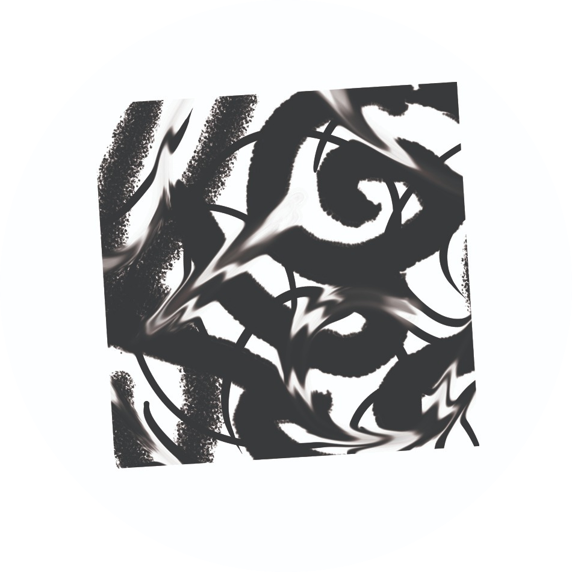

Many possible
worlds.
We build AI and data systems for the one we share. Grounded in research. Attentive to people.
Real systems.
Human stakes.
Applied AI, language infrastructure, and research tools. Built around the questions that matter in practice.
LexGPT
Jurisprudence search and RAG for legal research. Sources and claims remain open to verification.
Explore legal research ↗Molcajete
Transcription, speaker diarization, theme classification, and reporting for focus-group research.
Explore research infrastructure ↗Adapta
Mexican Spanish fine-tuning infrastructure, with reproducible experiments and model evaluation.
Explore language systems ↗Glasshouse
Claim detection, evidence retrieval, and assessment in a transparent journalistic fact-checking workflow.
Explore fact-checking ↗
The human is
part of the system.
Psychology, philosophy, and technical depth inform how we work. From the first question to the pipeline that someone uses every day.
Founded by Gustavo Costa, psychologist turned data scientist. AI & NLP · mixed-methods research · pipelines & automation.